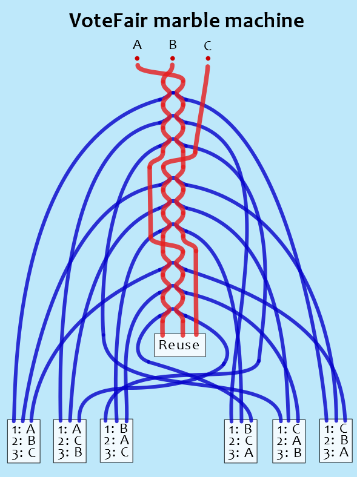

VoteFair Marble Machine
Watch marbles do Condorcet-Kemeny-VoteFair voting calculations
This marble machine does VoteFair popularity ranking (which is mathematically equivalent to Condorcet-Kemeny calculations) for three choices.
How the VoteFair marble machine works
One set of "voting" marbles — of a larger size — are used for the voting. A voter deposits their first voting marble into the opening that is marked with their first choice. When marbles stop moving, the voter deposits their second voting marble into the opening marked with their second choice. (Depositing the third marble can be done, but the third marble has no effect on the results.)
Another set of "tally" marbles — of normal size — are the ones that are controlled by the voting marbles. Before each voter votes, a lever must be pulled. That action deposits nine tally marbles onto nine platforms, where they wait until the voting marbles are deposited.
At the bottom of the machine there are six glass (or otherwise clear) jars. Each jar is labeled to indicate one of the six possible sequences. Each such sequence indicates which choice is most popular, which choice is second-most popular, and which choice is least popular.
When a voting marble drops down through its predefined path, that larger marble hits some of the tally marbles. Each tally marble, when it is knocked off, travels into a tube that leads to one of the six jars. The knocking action chooses whether a tally marble goes left or right from its platform. After a tally marble has been knocked off, that marble is not available to be knocked off by a large-size marble that passes through on the opposite side.
When all the voters have voted, visually look to see which jar has the most tally marbles. If two jars look like they might be tied (as having the most marbles), the marbles in those jars can be manually counted (or weighed, if all the marbles have the same weight) to identify which jar actually has more marbles. The jar with the most marbles has the label that indicates which choice is most popular, which choice is second-most popular, and which choice is the least popular.
Update: To simplify the arrangement, shift all the marble-counting containers to the right, so they are to the right of the "modules." This version uses parallel (without any crossings) down-and-to-the-right paths that are in a plane that is closer to the viewer. This version uses parallel vertical paths that drop the marbles into the containers, and these vertical paths are in the same plane as the paths of the large marbles. The pattern of which path leads to which container is determined by having a different length for each down-and-to-the-right path.
Suggestions for building
Here are suggested instructions for building the VoteFair marble machine. These instructions are being written without having actually built the marble machine, so do not blindly follow these suggestions in situations where something else makes more sense.
Update: A 3D file of the latest version of the “pairwise-counting module,” is here. (If edits are needed, here is a version before the marble paths are subtracted from the block shape.)
- Start by making one instance of a “pairwise-counting module,” which can be made by adding grooves and holes to a wooden or plastic block, or which can be designed digitally and then manufactured under computer control. This module has two channels — one on the left, and one on the right — through which a large-size marble can travel from an entrance at the top to an exit at the bottom. In the center of this module is a platform that holds a normal-size marble. When a large marble passes through the left or right channel, it knocks the normal-size marble off the platform, and into a special channel that is narrower than the large-marble channel. This deeper, narrower channel causes the normal-size marble to exit from one of the two side holes. The entrance holes at the top of each module need to line up with the exit holes at the bottom of a neighboring module, so that a large-size marble can travel through a series of connected modules. In the diagram below, the paths of the large-size marbles are shown in red, and the paths of the normal-size marbles are shown in blue. It does not show the platform in the center on which a normal-size marble rests (before it is knocked off). Test and refine this module before moving on to the next step.
- Build nine of the above-described modules, and mount them in line with one another, leaving two gaps. In other words, there must be three groups, and each group has three adjacent modules.
- Build three funnel-like entrances into which the voter conveniently puts the large-size marbles. The openings can be square rather than round so that a mis-placed marble does not drop between the entrances. Each entrance will guide a large-size marble into a clear plastic tube. Label each entrance with the name of the choice, such as “A”, “B”, and “C”, or perhaps “Chocolate”, “Strawberry”, and “Vanilla” if ice-cream flavors will be the ballot choices.
- Place six glass jars (or clear plastic containers) at the bottom of the machine. Label each jar as shown in the large diagram above, or in a similar way.
- Place a container at the bottom of the bottom-most module. (Or a clear tube can deliver the marbles to a more convenient location.) This container will collect the large-size marbles, and make them available for the next voter. A rounded shape similar to a ”coin return” makes grabbing the marbles more convenient.
- Using clear plastic tubes of two sizes, connect the modules and funnels and jars and container in the arrangement shown in the large diagram above. The large-size marbles travel through the clear tubes and modules along the paths shown as red lines, and the normal-size marbles travel through the clear tubes and modules along the paths shown as blue lines.
- Build a lever-activated mechanism that delivers nine normal-size marbles to the nine platforms. If made of wood, it can be a dowel that fits inside a long hole in a square length of wood. When the lever is at one end of its range, nine holes (each of which is the depth of one normal-size marble) allow the next marble from a stack of marbles to enter the dowel. When the lever is at the other end of its range, the nine marbles fall out of nine holes. A cross-section of this mechanism is shown below. (Other designs are also possible, and the mechanism could use an electric motor instead of a manually activated lever.)
- Connect clear plastic tubes between the lever-feed mechanism and the platforms in the modules. Ensure that the lever-feed mechanism (if used) is easy to access. Also ensure that all the marbles arrive at the platforms without excessive speed because that may cause some marbles to bounce off the module instead of resting on the platform.
- Test the machine. Start by looking at the left-most jar's label and insert the three large-size marbles in that sequence. Verify that after this vote there are three marbles in the jar that has the same sequence as the matching jar's label, there are no marbles in the jar that has the opposite (inverse) sequence, there are two marbles in two other jars, and there is one marble in each of the other two jars. Remove the marbles from the jars before the next test. Repeat this process using the label on each of the remaining five jars. If the results are not correct, compare the marble paths in your machine with the paths shown in the diagram.
- Try it out! Invite friends/classmates to use it to rank three choices. If needed, refine the design to increase reliability and ease of use.
- Finally, create a video of it, and post it on YouTube! Then, send the URL to this VoteFair.org website so that a link to your video can be added to this page.
- Appreciate that you are helping to teach how voting should be done, namely by using pairwise counting — instead of trying to use simplistic two-choice counting for more than two choices.